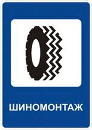
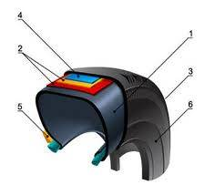

Зачем необходим шиномонтаж и балансировка?
Для многих шина представляет собой обыкновенный баллон из резины. С геометрической точки зрения шина - это тор, с механической - сосуд в форме упругой мембраны с высоким давлением, с химической - материал, имеющий макромолекулы с длинными цепями. По своей структуре шина обладает высокими эксплуатационными свойствами. А в целом, шина - это одно из достижений научно-технического прогресса, синтез научных и технических знаний и современных технологий.
О том, что с наступлением холодов либо тепла резину надо менять, знает каждый. Однако не каждый знает зачем. Давайте попытаемся найти ответ. Зимние колеса, в отличии от летних и всесезонных, имеют большее сцепление с заснеженной или обледенелой дорогой. Дело в том, что сцепные свойства шин в различных режимах движения и на разных покрытиях во многом зависят от эластичности протекторного слоя. В свою очередь, на эту характеристику сильно влияет температура. Чем холоднее на дворе, тем жестче резина и хуже ее сцепные свойства; а в зимний период это означает и длинный тормозной путь, и скольжение на льду даже при самых маленьких скоростях, и проблемы с троганием с места, и заносы.
Чтобы уменьшить влияние низких температур, в состав резины стали внедрять кремнийорганические соединения. Таким образом улучшили низкотемпературные характеристики резиновой смеси, используемой при производстве зимних шин.
Почему же нельзя все время ездить на зимних колесах? Пусть они дороже, но зато сколько преимуществ! Вынуждены вас разочаровать. На сухой и теплой дороге дорогая зимняя резина износится очень быстро. При высокой скорости шины начинают шуметь, а сильно разогревшись мягкий сплав может не выдержать и лопнуть. К тому же у машины на зимних колесах ощутимо увеличивается расход топлива.
Всесезонные же шины хороши только для широт с мягким климатом. Как всё универсальное, они значительно уступают сезонным моделям. Летом приводят к повышенному расходу топлива, а зимой на льду вполне могут повести себя как летние.
«Переобуть» машину на зиму следует уже при снижении температуры воздуха до +7 градусов Цельсия. Так как при этой температуре летняя резина уже теряет эластичность и плохо работает на дороге. Соответственно переход на летнюю резину рекомендуется при повышении температуры воздуха свыше +7 градусов Цельсия.